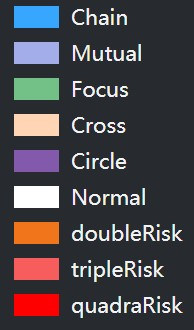

担保关系类型索引
Circle：担保圈
所有含有担保圈的子图。要注意的是形成担保圈的企业可能含有其他类型风险，比如某一些企业形成了担保圈又有”互保“的现象，所以其标记为doubleRisk等多重风险，可将鼠标移动到相应企业后在右上方查看具体风险种类
Cross: “一保多”
含有“一保多”现象的子图。“一保多”企业（该企业可能为担保机构）为两个以上企业提供担保，这些必须通过担保机构才能够在银行获得贷款的中小企业，往往资产规模更小，出现违约的可能性更大；且过多的为其他企业做出担保，会带来较大风险
Focus: “多保一”
含有“多保一”现象的子图。“多保一”企业被两个以上企业提供担保，这些需要多个企业或机构担保的企业，资金缺口较大，其资产现金流出现问题的概率更大，抗风险能力也较弱。该企业一旦出现风险，风险会扩散给多个企业或机构
Chain: 担保链
只含有担保链的子图。需要强调的是，这里展示的是只含有担保链的子图。此外，在circle, cross, focus, mutual的图中都有担保链的存在，但其担保链中的某些企业混合有其他风险，所以这些企业标记为doubleRisk等多重风险
Mutual: 互保
含有“互保”现象的子图。实际上，在该图中，基本不存在单独的两个企业形成互保关系的子图，形成互保现象的企业都在子图中形成了其他风险，所以这些企业标记为doubleRisk等多重风险，可将鼠标移动到相应企业后在右上方查看具体风险种类
Normal： “一保一”
只含有“一保一”现象的子图。在该图中，一个企业和机构对另外一个企业或机构提供担保，属于正常的担保现象，相较于其他子图的担保模式，“一对一”担保关系所带来的风险较低

可视化视图说明
1、节点的大小表示了该节点在其所在子图中的影响力，越大的节点所代表的企业，违约后对子图中的其他企业影响越大
2、边越粗则表示担保的金额越大，边显示的数字则为该担保行为的担保金额
3、doubleRisk, tripleRisk, quadraRisk类型意味着分别包含了二、三、四种混合风险。鼠标移动到含有混合风险的节点后，可在右上角查看具体含有风险的种类